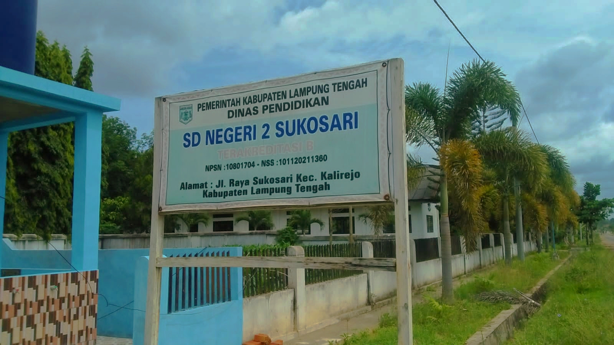
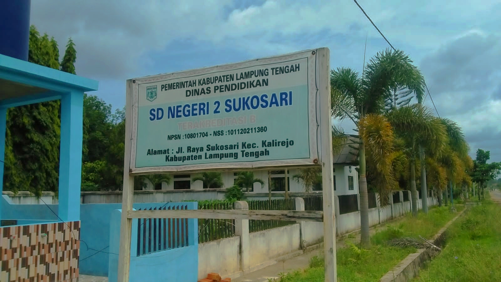

SD Negeri 2 Sukosari
Kalirejo, Lampung Tengah
READ MOREMenjadi Sekolah Dasar Yang Unggul Dan Berprestasi Dalam Imtaq Seni Budaya, Olaraga Dan Ketrampilan Untuk Mandiri Dan Bertanggungjawab Serta Teladan Dalam Bersikap Dan Bertindak
1. Meningkatkan Kualitas Tenaga Kependidikan
2. Meningkatkan disiplin dan Profesionalisme Kelapa Sekolah, Guru dan Karyawan
3. Meningkatkan Mutu Ketulusan Kelas VI
4. Meningkatkan ilmu pengetahuan, serta bidang bahasa, olahraga, dan seni budaya sesuai dengan bakat, minat yang sesuai prestasi siswa (IPTEKS)
5. Melakukan kerjasama dengan komite dan wali murid dalam pengelolaan pendidikan
KOMITE SEKOLAH
KEPALA SEKOLAH
SEKRETARIS
BENDAHARA
OPERATOR SEKOLAH
BERITA TERBARU
Setelah sempat melakukan kegiatan belajar mengajar secara tatap muka, kini Sekolah Dasar (SD) Negeri 2 Sukosari, Kecamatan Kalirejo, Lampung Tengah, kembali menerapkan sistem pembelajaran jarak jauh secara online.
READ MORE...
BERITA TERBARU
Data siswa yang belajar di SDN 2 Sukosari berjumlah 172 siswa-siswi (termasuk 2 siswa pindahan)
READ MORE...
BERITA TERBARU
Kepala SD Negeri 2 Sukosari, Dwi Yati, S. Pd, ketika dikonfirmasi awak koran Handal Lampung mengaku jika semenjak kegiatan belajar mengajar kembali dengan sistem online, pihaknya tetap menjalankan tugas seperti biasa dengan tetap datang ke sekolah untuk bertugas.
READ MORE...
 



Jam Operasional 08.00 - 11.00 WIB Ruang TIK SDN 2 Sukosari